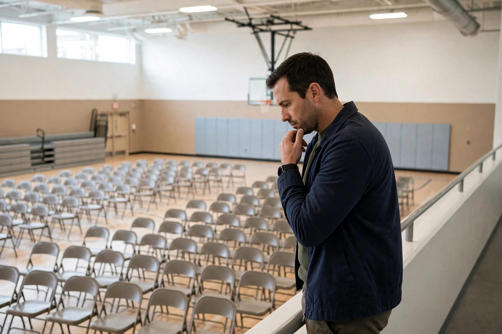

Strategic seating: sight lines, blind spots, and the perfect chair angle

You are a tired parent, and the school gymnasium is a room of chairs that fold, a floor that echoes, and lighting that could keep a hospital awake. Before you do anything else — before you even accept the juice box from the PTA table — you must survey the terrain. Real estate is everything.
Every presentation venue has the same basic geography. Learn it once, and you'll never fear a folding chair again.
The zone map
Zone 1: The front row. A graveyard for the tired. Your kid can see you. The teacher can see you. Everyone's phone photos will include your chin at its lowest. Sit here only if you are fully rested, freshly caffeinated, or have decided to be a hero today. Heroes are wonderful. Heroes also can't blink.
Zone 2: The middle block. The comfort trap. You feel anonymous, but the middle is where the acoustics converge and every snore gains stadium reverb. Also: you are hemmed in on both sides, so a strategic exit requires climbing over a grandmother. Risky. Respectable, but risky.
Zone 3: The side aisles. Better. One open flank, sight lines mostly aimed at the stage, and the wall on your left provides structural support for what we'll call resting your head at a thoughtful angle. The trade-off: the teacher occasionally paces the aisle, and teachers have the eyesight of hawks.
Zone 4: The back row. The promised land. Maximum distance from both the stage and judgment. If the gym has a back wall, even better — lean technology works best with structural support. Note: do not sit directly under a speaker. One feedback squeal and your cover is gone forever.
Zone 5: The mythical corner behind the camera parent. Some heroic volunteer is filming everything. If you can position yourself so that this volunteer's shoulder or raised phone is between you and your child's line of sight, congratulations: you have found the blind spot. You are, for all practical purposes, invisible. Wave politely at the camera parent afterward. They are the unsung hero of this whole operation.
Timing matters more than location
The best seats are gone thirty seconds after the doors open. This means you must arrive early, which is deeply unfair because you are tired. But consider it an investment: five minutes of early arrival buys you forty minutes of premium positioning. It's the best return on effort in the whole tired-parent economy.
If you arrive late, accept your fate with dignity. Walk in confidently, smile at the ushers, and take whatever's left in the middle. Latecomers who try to squeeze into the back row cause a scene, and a scene is the opposite of invisible.
The chair angle
Standard folding chairs face the stage. That's the convention. But a two- or three-degree rotation — just enough to look like you're getting a better angle on the left-side display board — can tilt your sight line away from your kid's direct view while still looking attentive. The key is subtlety: rotate more than five degrees and you look like you've checked out entirely. Stay in the three-degree zone. It's science. (It's not science. But it's definitely a number.)
Additional tip: pick a chair next to a bag-pile, a stacked chair tower, or a decorative plant. Soft edges break up your silhouette. You are not hiding; you are blending with the environment. Nature documentary rules apply.
Advance reconnaissance
For repeat venues — your school's gym, the community center, the auditorium — build a mental map and refine it. Which rows have the squeaky chairs? (Avoid those; squeak is exposure.) Where does the air conditioning vent hit directly? (A cold vent keeps you alert — sit under it only if you genuinely want to stay awake, which, fair enough, is occasionally the goal.) Which side does your kid enter from? Sit on the opposite diagonal.
Finally, a word about the most important seat of all: the one next to your partner, best friend, or fellow tired parent. A trusted ally can be your early warning system — a subtle elbow when the kid looks your way, a whispered "they're on slide four." If you can only optimize one thing, optimize this. Two tired parents sitting back to back are a fortress.